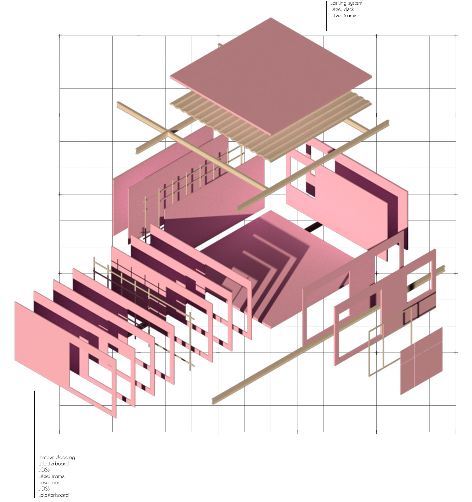

Vision of Nature /a cultural, social and recreational niche in Antalya
| _university | METU, Turkey |
| _semester | BSc in Architecture, 4th year design studio |
| _year | 2018 |
| _location | Zonguldak, Turkey |
| _author(s) | Orçun Yazıcı |
Zonguldak was a pioneer city of the industrialization in Turkey. Today urban memory of coal mining and industry, which is the origin of the city, is getting lost day by day. Industrialization is known as getting away from nature. Since the site is located on former coal minei which has industrial typologies. 'Biophilia' is a project that searches for an intermediary concept that brings nature and industry together. In addition to that it works as an earth sciences institute that serves both local residents and sightseers who come temporarily or permanently. For the preservation of the industrial heritage, existing building are protected and renovated. Paths that go around existing structures provide and support the interaction between industrial heritage and people. Architectural details and structure of the project inspired by the site's local elements which are also the reminders of urban memory. Diagonal connections of coal mine structures create the main steel bearer idea of the project. Historic mine elevators form the circulation cores of the building. 'Biophilia' is a living project that preserves past and responds to future needs.


